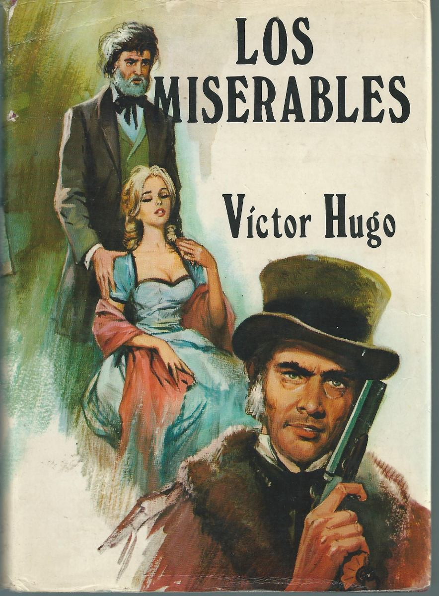
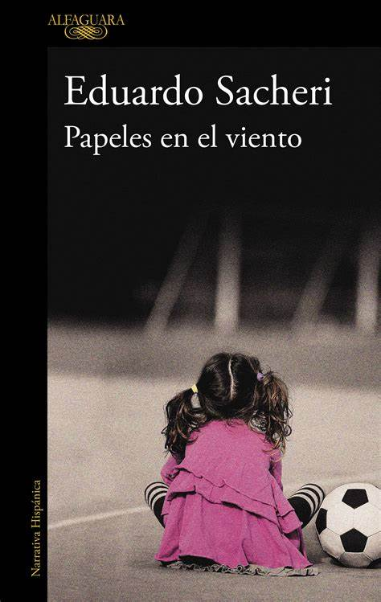
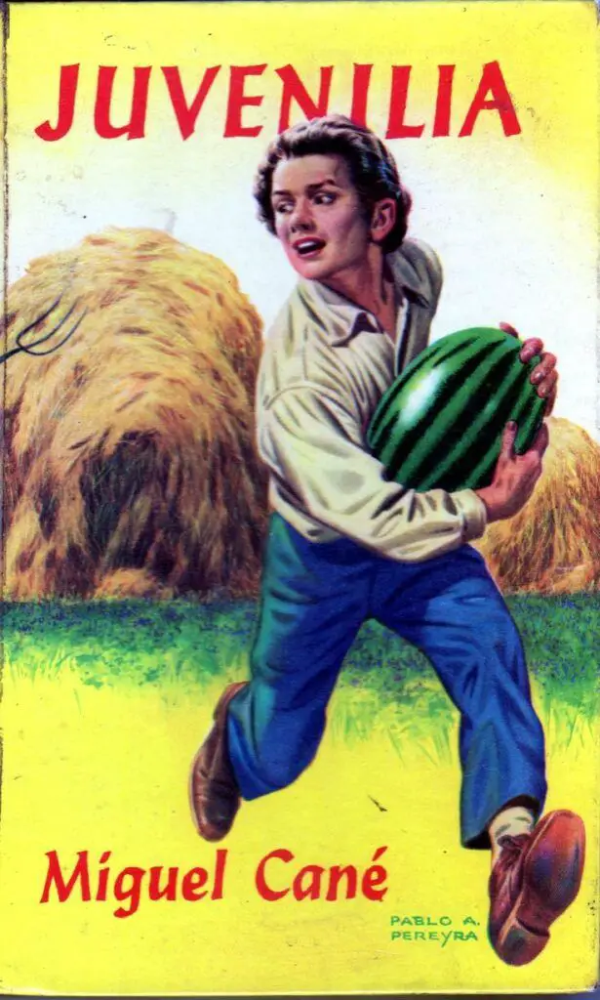

Logo
Inicio
Servicios
Contacto
Bienvenido
Este es un header con fondo de imagen y menú responsive.
Inicio
Quienes Somos?
Contacto y Consultas
Listado de Libros



Nuestro lugar en el Mundo
Videos de autores